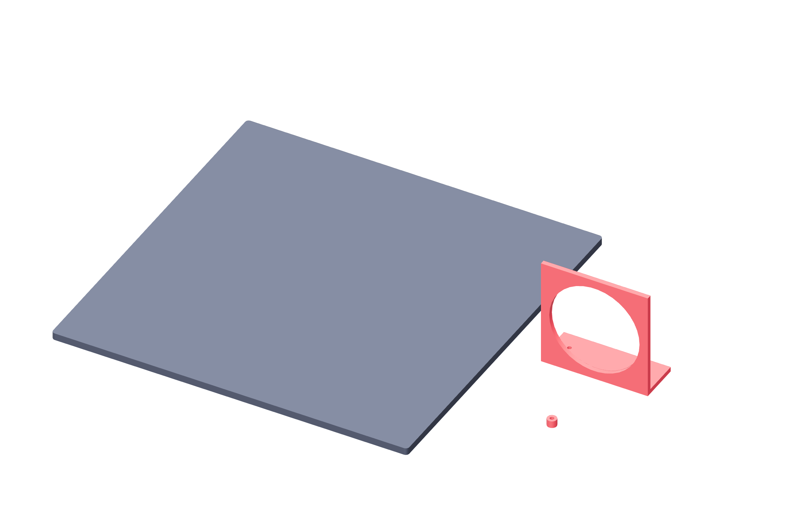

Preparation / controller prints28 / 179
Print the fixed controller mounts
The control board uses unfilled clear PETG as its electrical insulator. Three supplied models provide the blank, board clearance and guarded fan support.
AddNo new parts
Tools / setupOwned SunTop unfilled clear PETG · H2C · 0.4 mm nozzle

| File / mounting directory | Qty | Bed face |
|---|---|---|
controller-backplane.stl | 1 | Broad flat face on bed |
m3-insulating-spacer-6mm.stl | 28 | Annular end on bed; bore vertical |
fan-stand-80mm.stl | 1 | Rear fan-wall face on bed; supplied STL already rotated |
- Use 0.20 mm first / 0.24 mm normal layers, four walls, six top/bottom layers; 40% gyroid panel/stand and solid spacers.
- Use a 5 mm brim. Print the blank separately: its 310 × 310 mm brim footprint fits the conservative 325 × 320 mm H2C envelope.
- Use the supplied fan-stand STL with its rear wall on the bed and airflow bore vertical. Inspect each part’s own slice.
Ready when
The cooled blank is flat, spacer bores are clear and all supplied orientations print without supports. Warp, split spacers or a changed bed envelope fails this mounting set. Correct the material/profile/orientation before drilling.
Files: hardware/gun-positioner/mounting/. Use unfilled clear PETG B0FP34MJ94 for these fixed insulators; their 50°C installed thermal gate remains required.